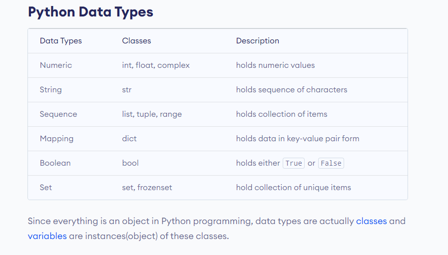

Datatypes in Python
Python supports various data types that define the kind of value a variable can hold. Understanding data types is fundamental in Python programming, as they help you work with different kinds of data in a meaningful way.
Note
Python is dynamically typed, which means you don’t need to declare the type of a variable when you create one. The type is inferred at runtime.
Built-in Data Types
### Numeric Types
int: Integer numbers, e.g., 1, -5, 42
float: Floating-point numbers (decimal numbers), e.g., 3.14, -0.001, 2.0
complex: Complex numbers, e.g., 1 + 2j, 3 - 4j
Warning
Division by zero will raise a ZeroDivisionError.
#### Examples
x = 5 # int
y = 3.14 # float
z = 1 + 2j # complex
### Sequence Types
str: Strings, sequences of characters, e.g., “hello”, ‘world’
list: Lists, ordered collections of items, e.g., [1, 2, 3], [‘a’, ‘b’, ‘c’]
tuple: Tuples, ordered collections of items (immutable), e.g., (1, 2, 3), (‘a’, ‘b’, ‘c’)
range: Ranges, sequences of numbers, e.g., range(5)
Note
Strings in Python are immutable, which means they cannot be changed after they are created.
#### Examples
s = "hello" # str
l = [1, 2, 3] # list
t = (1, 2, 3) # tuple
r = range(5) # range
### Mapping Type
dict: Dictionaries, collections of key-value pairs, e.g., {‘name’: ‘John’, ‘age’: 30}
Warning
Dictionary keys must be immutable and hashable types such as strings, numbers, or tuples.
#### Example
d = {'name': 'John', 'age': 30} # dict
### Set Types
set: Sets, unordered collections of unique items, e.g., {1, 2, 3}
frozenset: Frozensets, immutable sets, e.g., frozenset([1, 2, 3])
#### Examples
s = {1, 2, 3} # set
fs = frozenset([1, 2, 3]) # frozenset
Note
Sets are optimized for membership testing (checking if an item is in the set).
### Boolean Type
bool: Boolean values, True or False
Note
Boolean values in Python are actually a subtype of integers. True is equivalent to 1 and False is equivalent to 0.
#### Example
b = True # bool
### None Type
NoneType: Represents the absence of a value, None
Note
None is often used as a default value for function parameters or to signify the end of a list in linked list implementations.
#### Example
n = None # NoneType
Type Conversion
You can convert between different data types using built-in functions:
int(): Convert to integer
float(): Convert to floating-point number
str(): Convert to string
list(): Convert to list
tuple(): Convert to tuple
set(): Convert to set
dict(): Convert to dictionary
bool(): Convert to boolean
Warning
Converting between incompatible types will raise a ValueError.
#### Examples
x = int("42") # str to int
y = float("3.14") # str to float
z = str(42) # int to str
l = list((1, 2, 3)) # tuple to list
t = tuple([1, 2, 3]) # list to tuple
s = set([1, 2, 3]) # list to set
b = bool(1) # int to bool
Checking the Data Type
You can check the data type of a variable using the type() function:
#### Example
x = 42
print(type(x)) # Output: <class 'int'>
Program Example
Here’s a complete program that demonstrates different data types in Python:
# Numeric types
int_var = 42
float_var = 3.14
complex_var = 1 + 2j
# Sequence types
str_var = "hello"
list_var = [1, 2, 3]
tuple_var = (1, 2, 3)
range_var = range(5)
# Mapping type
dict_var = {'name': 'John', 'age': 30}
# Set types
set_var = {1, 2, 3}
frozenset_var = frozenset([1, 2, 3])
# Boolean type
bool_var = True
# None type
none_var = None
# Print the variables and their types
print("int_var:", int_var, "type:", type(int_var))
print("float_var:", float_var, "type:", type(float_var))
print("complex_var:", complex_var, "type:", type(complex_var))
print("str_var:", str_var, "type:", type(str_var))
print("list_var:", list_var, "type:", type(list_var))
print("tuple_var:", tuple_var, "type:", type(tuple_var))
print("range_var:", list(range_var), "type:", type(range_var)) # Convert range to list for printing
print("dict_var:", dict_var, "type:", type(dict_var))
print("set_var:", set_var, "type:", type(set_var))
print("frozenset_var:", frozenset_var, "type:", type(frozenset_var))
print("bool_var:", bool_var, "type:", type(bool_var))
print("none_var:", none_var, "type:", type(none_var))
Output
int_var: 42 type: <class 'int'>
float_var: 3.14 type: <class 'float'>
complex_var: (1+2j) type: <class 'complex'>
str_var: hello type: <class 'str'>
list_var: [1, 2, 3] type: <class 'list'>
tuple_var: (1, 2, 3) type: <class 'tuple'>
range_var: [0, 1, 2, 3, 4] type: <class 'range'>
dict_var: {'name': 'John', 'age': 30} type: <class 'dict'>
set_var: {1, 2, 3} type: <class 'set'>
frozenset_var: frozenset({1, 2, 3}) type: <class 'frozenset'>
bool_var: True type: <class 'bool'>
none_var: None type: <class 'NoneType'>
Summary
Understanding data types in Python is crucial for writing effective and efficient code. Each data type serves a specific purpose and offers different functionalities. By knowing when and how to use these data types, you can handle various kinds of data with ease.